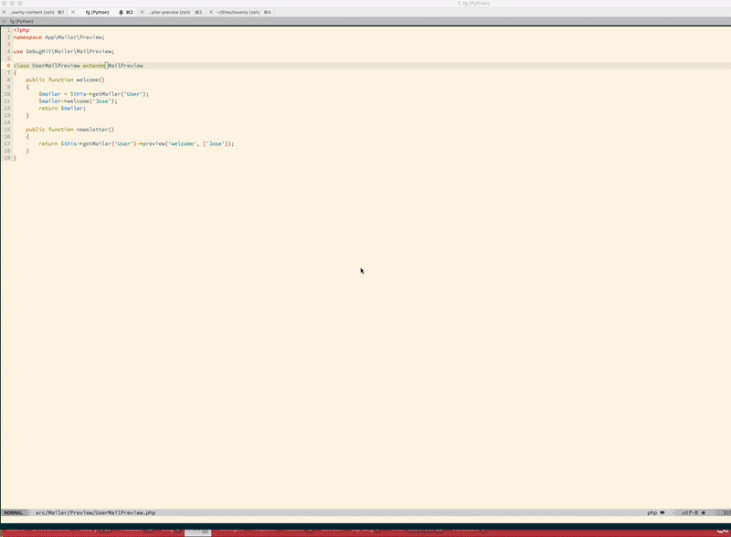

Debug Kit¶
DebugKit is a plugin supported by the core team that provides a toolbar to help make debugging CakePHP applications easier.
Installation¶
By default DebugKit is installed with the default application skeleton. If you’ve removed it and want to re-install it, you can do so by running the following from your application’s ROOT directory (where composer.json file is located):
php composer.phar require --dev cakephp/debug_kit "~3.0"
Then, you need to enable the plugin by executing the following line:
bin/cake plugin load DebugKit
DebugKit Storage¶
By default, DebugKit uses a small SQLite database in your application’s /tmp
directory to store the panel data. If you’d like DebugKit to store its data
elsewhere, you should define a debug_kit connection.
Database Configuration¶
By default DebugKit will store panel data into a SQLite database in your
application’s tmp directory. If you cannot install pdo_sqlite, you can
configure DebugKit to use a different database by defining a debug_kit
connection in your config/app.php file. For example:
/**
* The debug_kit connection stores DebugKit meta-data.
*/
'debug_kit' => [
'className' => 'Cake\Database\Connection',
'driver' => 'Cake\Database\Driver\Mysql',
'persistent' => false,
'host' => 'localhost',
//'port' => 'nonstandard_port_number',
'username' => 'dbusername', // Your DB username here
'password' => 'dbpassword', // Your DB password here
'database' => 'debug_kit',
'encoding' => 'utf8',
'timezone' => 'UTC',
'cacheMetadata' => true,
'quoteIdentifiers' => false,
//'init' => ['SET GLOBAL innodb_stats_on_metadata = 0'],
],
Toolbar Usage¶
The DebugKit Toolbar is comprised of several panels, which are shown by clicking the CakePHP icon in the bottom right-hand corner of your browser window. Once the toolbar is open, you should see a series of buttons. Each of these buttons expands into a panel of related information.
Each panel lets you look at a different aspect of your application:
- Cache See cache usage during a request and clear caches.
- Environment Display environment variables related to PHP + CakePHP.
- History Displays a list of previous requests, and allows you to load and view toolbar data from previous requests.
- Include View the included files grouped by type.
- Log Display any entries made to the log files this request.
- Packages Display the list of packages dependencies with their actual version and allow you to check for outdated packages.
- Mail Display all emails sent during the request and allow to preview emails during development without sending them.
- Request Displays information about the current request, GET, POST, Cake Parameters, Current Route information and Cookies.
- Session Display the information currently in the Session.
- Sql Logs Displays SQL logs for each database connection.
- Timer Display any timers that were set during the request with
DebugKit\DebugTimer, and memory usage collected withDebugKit\DebugMemory. - Variables Display View variables set in controller.
Typically, a panel handles the collection and display of a single type of information such as Logs or Request information. You can choose to view panels from the toolbar or add your own custom panels.
Using the History Panel¶
The history panel is one of the most frequently misunderstood features of DebugKit. It provides a way to view toolbar data from previous requests, including errors and redirects.

As you can see, the panel contains a list of requests. On the left you can see a dot marking the active request. Clicking any request data will load the panel data for that request. When historical data is loaded the panel titles will transition to indicate that alternative data has been loaded.

Using The Mail Panel¶
The mail panel allow you to track all emails sent during a request.

The mailer preview allows you to easily check emails during development.

Developing Your Own Panels¶
You can create your own custom panels for DebugKit to help in debugging your applications.
Creating a Panel Class¶
Panel Classes simply need to be placed in the src/Panel directory. The
filename should match the classname, so the class MyCustomPanel would be
expected to have a filename of src/Panel/MyCustomPanel.php:
namespace App\Panel;
use DebugKit\DebugPanel;
/**
* My Custom Panel
*/
class MyCustomPanel extends DebugPanel
{
...
}
Notice that custom panels are required to extend the DebugPanel class.
Callbacks¶
By default Panel objects have two callbacks, allowing them to hook into the
current request. Panels subscribe to the Controller.initialize and
Controller.shutdown events. If your panel needs to subscribe to additional
events, you can use the implementedEvents() method to define all of the events
your panel is interested in.
You should refer to the built-in panels for some examples on how you can build panels.
Panel Elements¶
Each Panel is expected to have a view element that renders the content from the
panel. The element name must be the underscored inflection of the class name.
For example SessionPanel has an element named session_panel.ctp, and
SqllogPanel has an element named sqllog_panel.ctp. These elements should be
located in the root of your src/Template/Element directory.
Custom Titles and Elements¶
Panels should pick up their title and element name by convention. However, if you need to choose a custom element name or title, you can define methods to customize your panel’s behavior:
title()- Configure the title that is displayed in the toolbar.elementName()- Configure which element should be used for a given panel.
Panel Hook Methods¶
You can also implement the following hook methods to customize how your panel behaves and appears:
shutdown(Event $event)This method typically collects and prepares the data for the panel. Data is generally stored in$this->_data.summary()Can return a string of summary data to be displayed in the toolbar even when a panel is collapsed. Often this is a counter, or short summary information.data()Returns the panel’s data to be used as element context. This hook method lets you further manipulate the data collected in theshutdown()method. This method must return data that can be serialized.
Panels in Other Plugins¶
Panels provided by Plugins work almost entirely the same as other
plugins, with one minor difference: You must set public $plugin to be the
name of the plugin directory, so that the panel’s Elements can be located at
render time:
namespace MyPlugin\Panel;
use DebugKit\DebugPanel;
class MyCustomPanel extends DebugPanel
{
public $plugin = 'MyPlugin';
...
}
To use a plugin or app panel, update your application’s DebugKit configuration to include the panel:
// in config/bootstrap.php
Configure::write('DebugKit.panels', ['App', 'MyPlugin.MyCustom']);
Plugin::load('DebugKit', ['bootstrap' => true]);
The above would load all the default panels as well as the AppPanel, and
MyCustomPanel panel from MyPlugin.